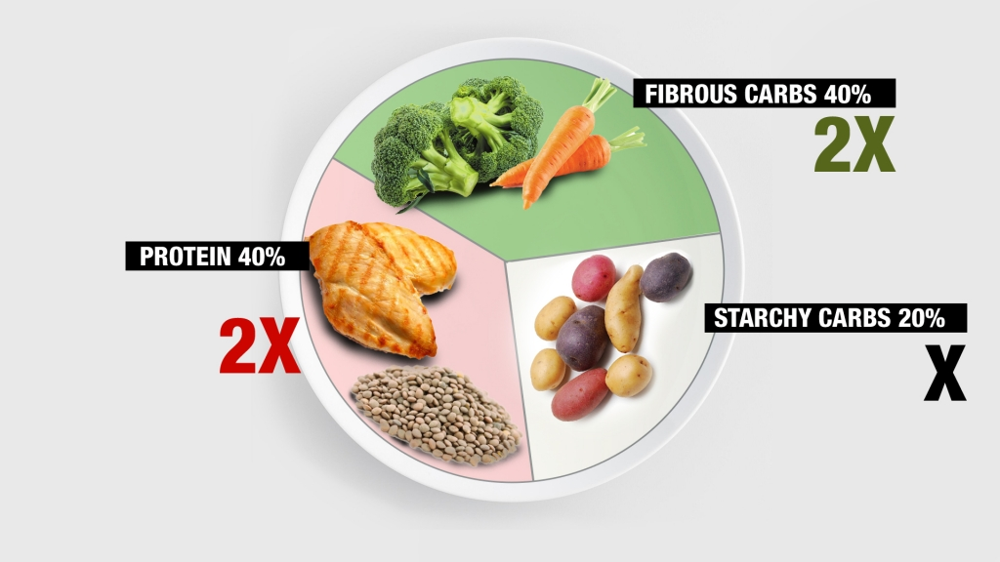
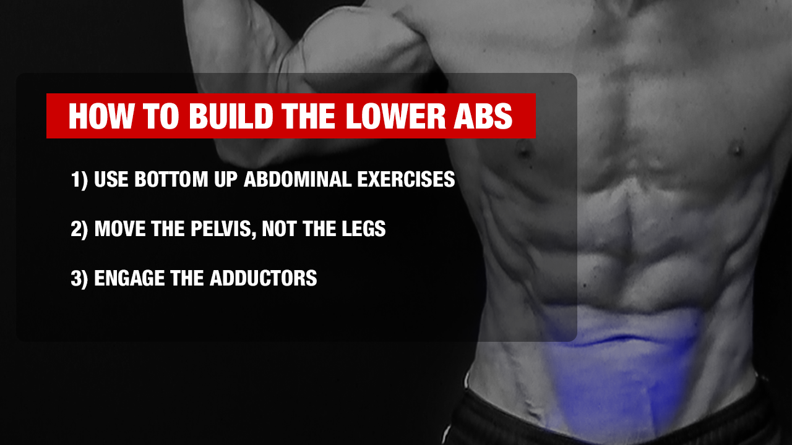

There are four main muscles that comprise the entire core that we're going to cover in this section.
I'll break out my famous Muscle Markers so that you can see exactly which areas we're talking about!
RECTUS ABDOMINIS
First up is the largest major muscle in the abdominal region: the rectus abdominis.
When we talk about 'upper abs' and lower abs' these aren't separate muscles but rather
separate regions of this same rectus abdominis muscle that spans almost the entire torso.
It's also the main muscle responsible for the six pack!
The fibers run vertically north to south, and the rectus is responsible for torso flexion from
top down or bottom up.
EXTERNAL OBLIQUES
Next up are the external obliques whose fibers run at an oblique angle (surprise!) from the
outer edges of the ribcage down toward the pelvis. These help us to rotate and control that
rotation.
This is also the muscle responsible for that nice 'frame' to the rectus abdominis or six pack.
INTERNAL OBLIQUES
The internal obliques run in the opposite direction from the external obliques, from the outer
edge of the ribcage close to the hip, and up and in toward the midline of your body.
TRANSVERSE ABDOMINIS (core stabilizer muscles)
The transverse abdominis runs like a weight belt around your waist, and it's one of the
deepest ab muscles and one of the core stabilizers. When you suck in your abs or perform ab
vacuums it's the transversus abdominis doing the work. Working these deep abs muscles is
important because it helps drive stability in the abdominal muscles.
SERRATUS
The serratus anterior is an ab muscle many people totally forget about, or worse, don't even
know exists.
If that's you, listen up!
The serratus is important for stabilizing the trunk because it keeps the shoulder blades in
contact with the rib cage. Its fibers are 'woven' together with the oblique fibers and
together they work to control rotation of the trunk.
It is possible to strengthen this muscle with one specific abs exercise which I'll show you
later in this article!
(2) CAN ANYONE GET ABS?
If visible abs are one of your fitness goals, the answer is YES… with proper nutrition, exercise and
discipline, anyone should be able to get some amount of visible abs, even if it's just the top two or
four of the six pack
Typically, as body fat decreases, the uppermost abs are the ones that reveal themselves first.
The first tier of the pack is the one that will poke out and stoke your motivation to keep going.
The remaining packs in the lower abdominal area are the most challenging to see because the lower
belly is one of the last places both men and women retain bodyfat… it's the hardest to lose.
And if your ab muscles are hidden by belly fat, you definitely won't be able to see them! More on that in a bit.
Now if you're wondering whether YOU can ultimately achieve 6 pack or even 8 pack abs, the answer could
be yes or no.
It depends on your genetics…
WHAT ARE 8 PACK ABS?
The “packs” in 4 pack, 6 pack or 8 pack abs are created by connective tissue in the rectus abdominis
muscle. In some areas the connective tissue is pulled tighter than in others which gives the
impression of divisions in the muscle.
Some people are born with just 4 divisions, while others are born with 6 or 8. Six of these divisions
is the most common in the general population.
This means that there are no 8 pack abs workouts, and not much you can do to get an 8 pack if you
weren't born with it.
But truly, who cares?
A lean set of washboard abs and a bulletproof core looks great no matter how many packs there are.
And of nearly ALL the most popular bodybuilders throughout history, none had an 8 pack.
If you want to determine what your genetic abs potential is, you can take the 8 Pack Abs test in my 8
Pack Abs vs 6 Pack Abs article.
(3) NUTRITION FOR ABS
It's important to realize that powerful ab workouts aren't the only ingredient in the recipe for
getting six pack abs.
In fact, functional core exercises are not even the main ingredient.
Nutrition is the key.
Not sure you believe me? Let's look into it further…
DO AB WORKOUTS BURN BELLY FAT?
You can't burn belly fat by doing even the hardest ab exercises. Period.
Ab exercises will help develop the abdominal muscles and can provide a visual impact of muscle
definition that can help you stay motivated (when those top two 'packs' starting to pop out).
But spot reduction in which you try to reduce fat in a single problem area, such as the belly, just
isn't possible. Instead, you'll need to burn overall bodyfat if you want to see the belly fat that's
covering your abs start to disappear.
So, what you want to know is how to lose belly fat. Are you thinking, “Ok, I'll just do more cardio”?
If so, think again. When doing cardio training in which your heart rate increases, you will definitely
burn off some energy which can help somewhat with fat reduction. But the truth is that you can't outwork
a bad diet.
To get visible abs, you're going to have to work on your nutrition and meal planning. There's just no
way around it!
WHAT SHOULD I EAT TO GET ABS?
So then if nutrition is the key to seeing that six pack, what should you be eating?
There's a ton of conflicting info out there about nutrition and “correct” balance of macronutrients.
People like to make it really complicated but it doesn't have to be. In fact, it's all this
complication that keeps people from being able to stick to a plan.
I mean, how many people are going to be food journaling, meal planning, counting and measuring every
day for the rest of their lives? Some people even think following crazy weight loss plans is the best
way to get your abs to show, but it doesn't work because diets aren't sustainable.
The truth is there's a much easier way to eat a balanced, nutrient-dense diet and it doesn't include a
special six-pack diet. Let me break it down for you. Just take a round plate and imagine it divided
up into 40%, 40% and 20% for planning meals. That's 40% protein, 40% fibrous carbs and 20% starchy carbs.
Proteins include meats and seafood, dairy such as cheese and milk, or vegetarian/vegan protein
sources like soy, beans, nuts and seeds.
Fibrous carbs are fruits and vegetables.
For starchy carbs, choose unrefined options like whole grains, squash or sweet potatoes.
Fats are 'incidental'… use them to cook your food or where they're found as healthy ingredients in
a recipe in cases like nuts, seeds and avocados.
Simple, right? This is a great way to make sure you're planning meals and eating properly to get
your abs to show, without spending all your time food logging!

(6) WHAT ARE THE MOST EFFECTIVE ABS EXERCISES?
What makes a dynamic ab exercise fall into the 'most effective' category?
It needs to target the desired muscles, use little to no equipment, have multiple functions involved if
possible, and be difficult to perform incorrectly.
A lot of good abs exercises like leg raises, Russian twists and bicycle crunches are commonly performed
incorrectly. In these abs exercises it's all too easy to overuse hip flexors or underperform the
rotational aspect and completely miss out on the benefits.
What you will see is an array of dynamic core crushers that hit the most important functions and
regions of the abs. All of these bodyweight abs exercises will have some fail-safes built in to make
them much easier to perform correctly, which makes them much more effective.
If you want to try what I believe is the most effective abs routine that hits every one of these
functions and arranges the key exercises in the correct sequence for maximum efficiency, check out my
Perfect Abs Workout. It contains all of my favorite abs exercises as well as advanced exercises and
a beginner abs exercise alternative for each move.
If you're looking for complete and effective ab workouts at home that require no gym equipment at all
and can be done practically anywhere, give my Best Ab Workout at Home a try.
SIDE BRIDGE TWIST - LATERAL FLEXION AND ROTATIONAL CONTROL
HOW TO DO THE SIDE BRIDGE TWIST:
For this forearm side plank variation, starting position is in forearm plank position with
wrists on the ground, elbow under shoulder, but with feet in side plank position.
Make sure you're in a stable position and then lift your trunk up off the floor to create
lateral flexion pillar strength using the obliques and then twist the torso with a
controlled motion before returning to the starting position.
WHAT MAKES IT EFFECTIVE: This full-body movement works lateral flexion and rotational control
and stability at the same time. Whenever we combine functions, it makes for a more effective
exercise. This is also a challenging body weight exercise with no heavy weights required.
LEVITATION CRUNCH - UPPER ABS
HOW TO DO THE LEVITATION CRUNCH:
This variation on a classic bodyweight exercise proves that your favorite ab exercises
don't have to be elaborate to be effective. Starting position is in lying position with
your back on the ground on an exercise mat in basic crunch position, feet on floor, feet
hip width apart.
Keeping your feet shoulder width apart and feet flat on the ground, lift head and your
shoulder blades off the floor with arms behind your head and 'levitate' your upper body in
a curling movement toward the ceiling, neck relaxed, hands behind the head and allowing
your shoulder blades guide the way.
Observe proper form and don't crank on your neck or pull your head closer to your knees.
This doesn't work the abs.
Keep the entire core tight throughout the entire movement by pulling your belly button in.
WHAT MAKES IT EFFECTIVE:This crunch variation is a simple and small movement that is very
effective for training the upper abs without the need for the neck cranking involved in a
traditional crunch. You don't need a ton of range of motion here. It also requires no equipment at
all.
SWIPER - LOWER ABS
HOW TO DO THE SWIPER:
For this reverse crunches variation, starting position is with the upper body on the floor on an exercise mat.
Focus on performing a curling movement of the pelvis backward and getting it off the floor,
bringing your knees toward your chest.
Swipe your hands underneath your tailbone in half circular motion as it lifts, which will
help ensure you're doing the exercise correctly and provides an extra challenge for core
strength.
WHAT MAKES IT EFFECTIVE: This is a slow and easily controlled movement for the lower abs that
has a self-check built in to help make sure you're clearing the tailbone off the floor. This
advanced variation of reverse crunches is one of the best exercises to hit the lower portion
of the abs.
GYMNAST AB TUCK - LOWER ABS
HOW TO DO THE GYMNAST AB TUCK:
Position yourself in the apparatus in an upright position with abs braced and hands holding
onto the handles, wrists under shoulders.
Use your arms to lift your torso up and keeping your lower body rigid, focus on unfolding
your trunk right at the level of the pelvis, not on moving the legs.
This causes a posterior pelvic tilt which is responsible for the spinal flexion that
creates core muscle activation. While I'm doing it on a captain's chair, it can also be
done on a kitchen countertop corner.
Keep your hips stable throughout this slow movement.
WHAT MAKES IT EFFECTIVE: This tough exercise helps tune into the movement of the pelvis rather
than the legs - moving the legs forces the hip flexors to work, which we don't want. Another
benefit is that we don't have to hang to perform it, which means its effectiveness isn't
impacted by weak grip strength. Keep the torso straight throughout the exercise as you lift
the legs.
SLIDING AB TUCK - ENTIRE ABDOMINAL AREA
HOW TO DO THE SLIDING AB TUCK:
Starting position is in high plank position with hands at shoulder width (shoulders over
wrists) and using socks on a slick surface, slide your feet backward and in toward the
torso with a slight twist, twisting side to side.
Curl the pelvis into posterior pelvic tilt, not by driving with the hip flexors but by
using the abdominal muscles. Keep your entire body stable throughout the movement.
WHAT MAKES IT EFFECTIVE: There is no equipment required for this move, and not only can we work
the entire rectus abdominis, we can incorporate the obliques as well. This is an all-encompassing
exercise that does pretty much everything!
(7) WHAT WORKOUTS TARGET LOWER ABS?
As I alluded to earlier in this article, getting the lower abs to show is the most challenging piece
of the development of a six pack.
This is because the lower belly is one of the last places in the body to hold on to fat.
If you want to see lower ab definition, you need to stay very consistent with a high-quality nutrition plan.
That being said, the best lower abs workouts should focus on three things:
Using bottom-up abdominal exercises, as mentioned in the section about the Six Pack Progression.
Why bottom-up movements? The rectus abdominis is one large muscle, so there is no 'lower abs'
muscle separate from the rest of the abs. However, when we move from the bottom up, we move the
weight of the legs along with our pelvis. That turns the exercise into an effective weighted ab
exercise, which provides overload and causes hypertrophy in the lower abdominal area. The lower abs
will then stand out and become more visible IF body fat levels are low.
Focus on moving the pelvis, NOT the legs. If you're focused on raising and lowering the legs,
you're going to activate your hip flexors and NOT the core activation you're looking for. Move the
pelvis and let it take the legs along for the ride during every bottom-up exercise.
Engage the adductors on lower abs movements. These muscles attach to the pelvis from below, so
contracting them creates stability in the pelvis which will make them more effective ab exercises.
To apply this technique, cross your legs at the ankles and squeeze your legs together for both floor
-based and hanging lower ab movements.
If you'd like to try a great lower abs workout circuit where you can put all of these tips into
practice, take a look at my Best Lower Ab Workout.

SIDE - CRUNCH
HOW TO DO THE SIDE CRUNCH:
Allow the shoulder that's on the floor to go fully down and then rotate toward the floor to
open up the oblique muscle.
This extra rotation ensures that the muscle gets stretched on every rep, making it more effective.
WHAT MAKES IT EFFECTIVE: Allows you to move slowly and deliberately to make every repetition count
and really burn out the oblique muscles.
SIDE - BRIDGE
HOW TO DO THE SIDE BRIDGE:
For this classic obliques exercise, starting position is to elevate your feet on a surface such
as a chair and raise yourself into side forearm plank position with your left forearm flat on the
ground stabilizing your weight on the floor.
You can challenge yourself by dipping your torso down a bit on each rep.
Make sure to observe perfect form throughout the exercise.
WHAT MAKES IT EFFECTIVE: It trains the oblique muscle as a dynamic stabilizer which is part of
their natural function in everyday activitie
ELBOW TO KNEE
HOW TO DO THE ELBOW TO KNEE:
Lie on your side on an exercise mat with your right arm out for support and body angled
slightly back, legs in extended position.
Lie on your side on an exercise mat with your right arm out for support and body angled
slightly back, legs in extended position.
WHAT MAKES IT EFFECTIVE: This is an effective abs exercise that really targets the oblique muscles!
CORKSCREW
HOW TO DO THE CORKSCREW:
Starting position is supporting yourself in a captain's chair or dip station in an upright
position with abs braced and hips stable.
Dip and twist your body from side to side in a slow-and-controlled move, pressing down
through your hands.
Make sure to observe perfect form throughout the exercise keeping the torso straight up
and down.
WHAT MAKES IT EFFECTIVE: The pressing down of the hands gets the protraction that works the
serratus, which the twisting motion hits the obliques. This is a great exercise to add to any
bodyweight-only workout.